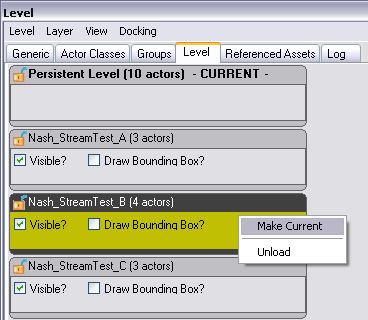
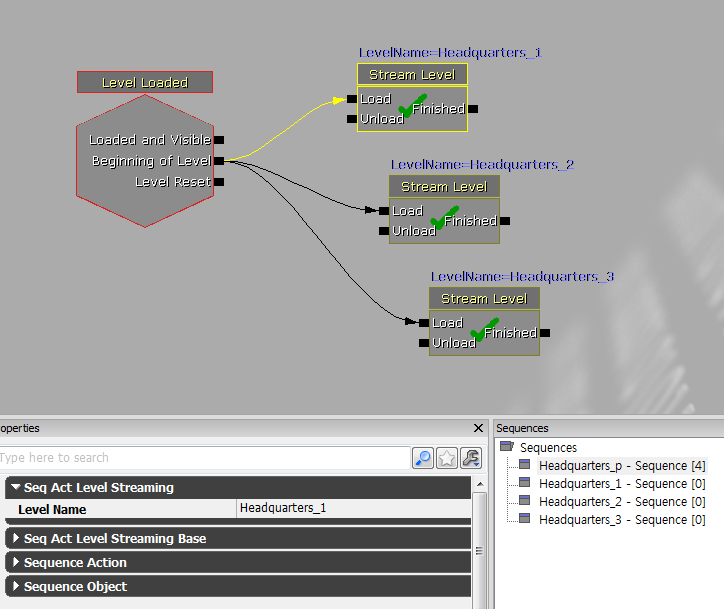
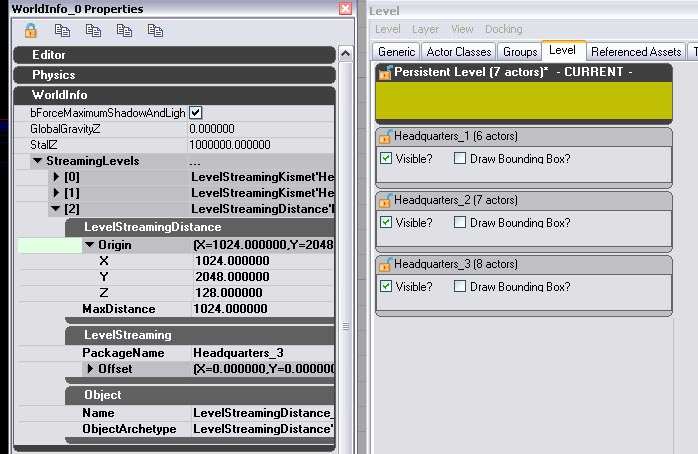

UDN
Search public documentation:
LevelStreamingHowToKR
English Translation
?�本語訳
�?��翻译
Interested in the Unreal Engine?
Visit the Unreal Technology site.
Looking for jobs and company info?
Check out the Epic games site.
Questions about support via UDN?
Contact the UDN Staff
?�本語訳
�?��翻译
Interested in the Unreal Engine?
Visit the Unreal Technology site.
Looking for jobs and company info?
Check out the Epic games site.
Questions about support via UDN?
Contact the UDN Staff
?�벨 ?�트리밍 ?�용?�기
문서 변경내?? Dave Nash ?�성. Daniel Vogel ?�정. ?�성�?/a> 번역.
개요
?�시?�턴??지?? ?�벨
- ??맵을 ?�성?�고 보이지 ?�는 ?�딘가???��? ?�브 지?�메?�리�?추�??�니?? (?�렇�??�면 ?�진?????�벨???�나???�벨�??�정???�며, 결국 ?��? ?�애???�계가 ?�을 것입?�다.)
- ?�레?�어 ?�작 지?�에 Player Start �??�습?�다. ?�시?�턴???�벨?�서????Player Start 가 공중????가?�성???��?�??�벨???�트�????�에??�?번째 ?�트리밍 ?�벨?�서 ?�레?�어�??�작?�고???�는 ?�느 ?�치로나 ?�동?????�습?�다. 게임???�레?�할 ?��? ?�니???�레?�어가 ?�시?�턴???�벨???�닌 ?�트리밍 ?�벨 �??�나??지?�메?�리???�제�??�과?????�시?�턴???�벨???�작?�니??
- 맵을 ?�?�합?�다. ?�체?�인 관�?방식??맞도�??�시?�턴???�벨 ?�름??지?�합?�다. ?��? ?�어 Headquarters_P 같�? ?�입?�다.
- 콘텐�?브라?��?�??�고 "?�벨" ??�� ?�릭?�니?? ?�기???�트�????�키?�는 모든 ?�벨???�열?�야 ?�니?? Headquarters 가 �??�으�?구성?�었?�면, ?�기??3가지�?모두 추�??�니?? 메뉴?�서 ?�벨 -> 기존 ?�벨 추�?... �??�택?�여 추�??�니?? ?�트리밍 ?�벨??추�??�는 ?�서??중요?��? ?�으???�으로는 ?�돈 ?�태 ?��?�??�한 ?�벨 ?�정?�이 가?�하?�록 ???�정?�니?? ?�업 결과???�래 그림�?같을 것입?�다.
- ?�벨 ?�트리밍 ?�동방식??거리?� ?�즈�?중에???�택?????�는 ?�션??주어집니??
- 거리 ?�트리밍?� ?�벨 ?�점?�서 ?�레?�어까�???거리???�라 ?�벨??로드 / ?�로?�합?�다.
- ?�즈�??�트리밍?� ?�자?�너가 ?�즈�??�크립팅???�해 마음?��??�벨??로드 / ?�로?�할 ???�어 가???�반?�입?�다.
 ??1: ?�트리밍 ?�벨 ?�을 추�??�킨 ?�후???�벨 브라?��?
"CURRENT(?�재)"�?명명?????�벨?� ?�디??창이??Kismet?�서 변경된 ?�용???�으�??�정?�니?? ?�렇�??�면 ?�벨 ?�기가 가?�한 ???�러 맵에??간편?�게 ?�업?????�습?�다. Save 버튼???�르�?CURRENT ?�벨???�?�합?�다(?�는 Save All Levels 버튼???�러 ?�시?�턴???�벨???�함???�기 ?�열??모든 맵을 ?�?�할 ???�습?�다).
Visible ?�인?�?� ?�디?�에???�벨???�기거나 ?�시?�게 ?????�습?�다. ???�인?�?� ?�직 ?�시 지?�용?�로, ?�벨 ?�행 ??게임???�트리밍?�는지 ?��??�???��? 관계�? ?�습?�다. 그러???�기??보이지 ?�는 ?�벨?� ?�벨???�시 빌드??경우 ?�향??받�? ?�으므�??�벨??복잡??경우?�는 ?�간???�게 ?�약?????�습?�다.
?�시?�턴???�벨?�서 ?�트리밍???�벨???�전???�거?�려�?브라?��???Level?�서 Remove level from world�??�택?�니?? ?�벨???�트리밍 방법??변경하?�면 ?�벨???�거???�음 ?�시 추�??�여 ?�트리밍 ?�을 ?�행??방법???�택?�니?? ?�재 "Load"?� "Unload", Lock/Unlock ?�이�? Draw Bounding Box ?�래그는 ?�동?��? ?�습?�다.
??1: ?�트리밍 ?�벨 ?�을 추�??�킨 ?�후???�벨 브라?��?
"CURRENT(?�재)"�?명명?????�벨?� ?�디??창이??Kismet?�서 변경된 ?�용???�으�??�정?�니?? ?�렇�??�면 ?�벨 ?�기가 가?�한 ???�러 맵에??간편?�게 ?�업?????�습?�다. Save 버튼???�르�?CURRENT ?�벨???�?�합?�다(?�는 Save All Levels 버튼???�러 ?�시?�턴???�벨???�함???�기 ?�열??모든 맵을 ?�?�할 ???�습?�다).
Visible ?�인?�?� ?�디?�에???�벨???�기거나 ?�시?�게 ?????�습?�다. ???�인?�?� ?�직 ?�시 지?�용?�로, ?�벨 ?�행 ??게임???�트리밍?�는지 ?��??�???��? 관계�? ?�습?�다. 그러???�기??보이지 ?�는 ?�벨?� ?�벨???�시 빌드??경우 ?�향??받�? ?�으므�??�벨??복잡??경우?�는 ?�간???�게 ?�약?????�습?�다.
?�시?�턴???�벨?�서 ?�트리밍???�벨???�전???�거?�려�?브라?��???Level?�서 Remove level from world�??�택?�니?? ?�벨???�트리밍 방법??변경하?�면 ?�벨???�거???�음 ?�시 추�??�여 ?�트리밍 ?�을 ?�행??방법???�택?�니?? ?�재 "Load"?� "Unload", Lock/Unlock ?�이�? Draw Bounding Box ?�래그는 ?�동?��? ?�습?�다.

??2: 마우???�른�?버튼???�릭?�고 "Make Current"�??�택?�여 ?�업 중인 ?�벨??변경합?�다.?�시?�턴???�벨 ?�업 방법 ?�약
- ?�리???�디?�에????맵을 ?�성?�니??
- ?�브처럼 간단??BSP 지?�메?�리�?추�??�니??
- Player Start �?추�??�니??
- ?�벨 브라?��??�서 ?�트리밍?�려???�벨??추�??�니??
- 맵을 ?�?�하�??�름??지?�합?�다.
?�즈멧을 ?�해 ?�크립트 ?�트리밍
- ?�즈멧을 ?�니??
- ?�벨 ?�작??배치?�니??New Event -> Level Loaded).
- ?�벨�?같�? ?�의 Steam Level ?�션???�습?�다. (New Action -> Level -> Stream Level).
- Stream Level ???�릭?�고 LevelName 부분에 ?�벨 ?�름???�어 �??�벨 ?�름??추�??�니??
- Level Loaded �?Steam Level ?�션??�?Load ?�력???�결?�니??

??3: ?�즈멧을 ?�해 ???�벨 로드 ???�점?�서 ?�시?�턴???�벨???�행?�켜 ?�트리밍 ?�벨???�아?�닐 ???�을 것입?�다. 로드?� ?�시??보이?�록 ?�정�????�?�면?? ?�포먼드?�의 ?�유�?그렇�??�정?��? ?��? ?�벨???�는 경우, ?�리거나 ?�른 ?�떤 방법???�해 보이�?만들 ?�단??강구?�야 ?�니?? ?��? ?�어 Headquarters_3 ??처음부???�레?�어?�테 보이�?만들?�게???�무 멀�??�을 ???�으?? 리소???�약???�해 ?�중??보이�?만들�?좋습?�다. New Action -> Level ?�래 Change Level Visibility ?�는 ?�즈�??�션???�습?�다. ???�션???�해 ?�하???��??�트리밍 ?�벨???�기�??�러?????�습?�다. Stream Level ?�션?�서 Unload ?�벤?��? ?�용?�면 ?�벨??메모리에???�로?�되??메모�??�보??좋습?�다�? ?�시 보이�?만들?�면 Load ?�벤?��? ?�용??줘야 ?�다???��? ?�념??주십?�오.?�크립트 ?�트리밍 ?�업 방법 ?�약
- ?�즈멧을 ?�니??
- Level Loaded ?�션�?StreamLevel ?�션??추�??�고 Level Loaded �?Load ?�력???�결?�니??
- Stream Level ???�릭?�고 "LevelName" ?�드???�트리밍?�려???�벨???�름???��? ?�음 bMakeVisibleAfterLoad �?체크?�니??
- 맵을 ?�?�하�?게임???�행?�니??
거리 기반 ?�트리밍

??4: 거리 기반 ?�트리밍 ?�정거리 ?�크립팅 ?�업 방법 ?�약
- 콘텐�?브라?��?�??�니??
- ?�벨 ??�� ?�릭?�니??
- 콘텐??브라?��????�일 메뉴?�서 Level -> New From File ???�택?�고 ?�트�????�킬 ?�벨???�택?�니??
- "Distance" ?�트리밍???�택?�니??
- "Persistent Level"???�택?�는지 ?�인?�고 ?�른쪽의 WorldInfo ?�록 ?�보�??�칩?�다. WorldInfo_#??마우???�른�?버튼?�로 ?�릭?�고 "Edit Properties"�??�택?�니??
- ?�시?�는 ?�로?�티 창에??WorldInfo �??�친 ?�음 StreamingLevels �??�칩?�다.
- ?�레?�어?�??거리가 ?�마???�어???�벨???�드???�트�????�킬 것인지 �?거리�??�력?�고, 거리 측정???�한 ?�점 ?�치�??�드 ?�페?�스?�의 ?�치�?변경합?�다.